12 面部中三分之一：面颊丰容
面部中段颊部丰容
SHINO BAY AGUILERA, LUIS SORO, AND JANI VAN LOGHEM
12.1 引言
衰老可能是不可避免的，但了解衰老过程使我们有能力增强青春并恢复所流失的部分。面部衰老先前被认为仅是重力作用于皮肤和皮下脂肪的结果，但它是一个多维度的、多层次的、多组织的进程 [1-4]。面部衰老的进展是由于皮肤的内在和外在变化、深层脂肪的吸收以及骨骼改变所致 [5]。其结果是面部形态、形状和比例的变化，所有这些都决定了衰老面部的特征 [6]。特别是中面部，会随着时间推移而趋于扁平和下垂 [7]。作者认为颧骨是青春、美丽和生育力的一个特别重要的标志。一些研究表明，较大的颧弓宽度与面高比值与更高的吸引力感知相关。因此，在对中面部进行注射填充剂时，必须保持、恢复或模仿颧骨，但绝不能使其变形、改变或掩埋。理想的颧骨是卵形的，而不是圆形的；具有一个角度；并且在眼下缘处有一个高点，称为顶点（apex）。HD-Sculpt 是一种使用羟基磷灰石钙（CaHA）的技术，通过轮廓塑形和提升中面部来逆转这些中面部的变化，从而创造出更雕塑感、更有定义的外观。目标是通过重新填充中面部和丰容颧弓来实现颧骨的增强。由于抬升了该区域，下颌缘（jowls）也可以得到显著改善。直接沿着下颌线和颊赘（jowl）周围注射也可用于进一步增强下颌线的轮廓和面部的年轻化。
12.2 安全注意事项
填充剂注射的主要顾虑是动脉闭塞，无论是由于外部压迫还是产品注入血管内（图 12.1）。对于更难溶解的产品，如 CaHA，这一点尤为突出。幸运的是，当在骨膜区域注射时，如 HD-Sculpt 技术所示，血管闭塞很少发生且易于避免。然而，需要注意的主要中面部动脉包括眶下动脉（infraorbital artery）、横面部动脉（transverse facial artery）和呈迂曲状的面部动脉（facial artery），以及与之吻合的角动脉（angular artery）。尽管不常见，但应避免穿刺神经损伤，使用本技术时需要特别注意的主要神经是眶下神经（infraorbital nerve）。损伤该神经可能导致长期难以治愈的神经痛。
在注射 CaHA 之前，考虑将产品转移到 1 mL 的 BD 注射器中，这样可以更容易地进行吸取操作，并确保针尖没有置于血管内 [8]。利用逆行注射技术并避免大体积团注也有助于最大限度地减少意外闭塞。最近上市的手持静脉查找仪非常有用，可以在减轻风险的同时减少瘀点形成。
区分血管内注射和瘀点的能力至关重要。组织立即变白提示为血管内注射。对被误认为瘀伤的区域进行冰敷可能会进一步影响血流，加速坏死。疼痛程度因产品中是否含有麻醉成分而异。注射数小时后，通常会在注射部位分布区域出现紫红色网状斑块。
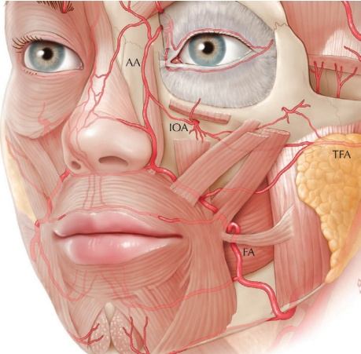
羟基磷灰石钙（CaHA）软组织填充剂
血管。丘疹形成后，组织逐渐变黑提示即将发生坏死。若怀疑发生血管闭塞，应立即采取措施，包括向患处注射至少 150 单位的透明质酸酶以最大程度地减少外部压迫，外敷硝酸甘油软膏，使用温湿敷，按摩该区域直至剧烈，并建议在症状消退前每日服用阿司匹林。
12.3 面颊丰容——HD-SCULPT 技术 1（男性）
参见图 12.2 了解注射定位。
12.3.1 分步技术
-
确定面颊顶点。如无法定位，使用 Hinderer 线。在男性中，使用外侧虹膜和口角之间的垂直线，并找到其与眶缘-泪沟线的交点。用利多卡因麻醉该区域（图 12.3），并用 21G 锐针建立进入点（图 12.4）。
-
以 30° 角引入钝性套管针（图 12.5）。
-
进入骨膜上平面后，减小角度至 10° 并使注射器与颧骨平行。钝性套管针的尖端应位于女性顶点或男性颧弓嵴后方 1–2 mm 处。
-
向后和外侧移动，沿发际线方向持续注射，每次置入 0.1 mL 产品，最终在整个颧弓上共置入 0.5 mL（图 12.6）。这突出了并定义了颧颊部，同时利用颧骨作为平台直接提升中面部。下半部分的面部也间接被提升。
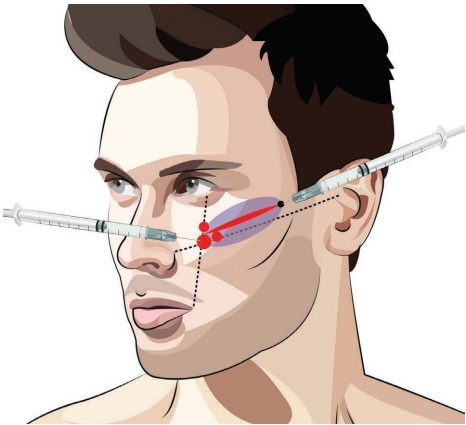
-
使用提供的锐针（图 12.7），在顶点处垂直于颧弓放置 0.2 mL 产品。
-
继续向外侧，沿发际线方向注射额外的 0.05 mL 分次产品，直至达到所需的轮廓和提升效果，注意颧骨应向外侧变薄。
12.4 面颊丰容——HD-SCULPT 技术 2（女性）
参见图 12.8 了解注射定位。
12.4.1 分步技术
-
定位面颊顶点。如无法找到，使用 Hinderer 线（图 12.9）。
-
向后移动 1 cm 至顶点处，垂直于骨膜（骨膜上；图 12.10）注射 0.1 mL。
-
返回先前定位的面颊顶点，进行骨膜上注射 0.2 mL（图 12.11）。
-
继续沿着颧弓，以 0.05 mL 的小分次产品注射，直至到达发际线，每次注射间距约 0.5 cm（图 12.12）。
-
对于女性，通过在深层内侧面颊脂肪间隙注射产品（图 12.13），重建前内侧面颊的鹅颈曲线。
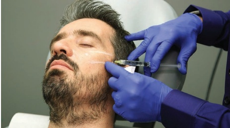
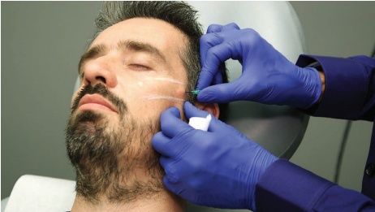
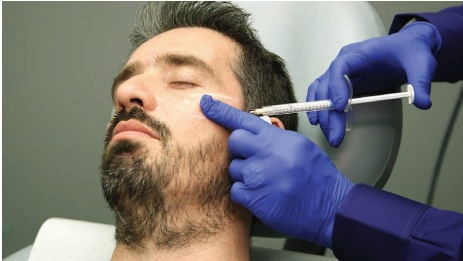
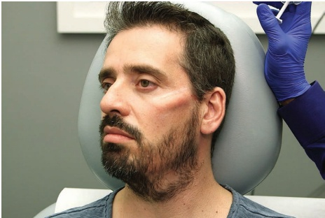
-
对于男性，不要形成鹅颈曲线。最大化产品在侧颊的放置量，以创造更具棱角的外观。
-
颏部区域可采用不同技术进行注射，例如连续穿刺或扇形逆行注射。
12.5 颊部丰容：精子球多层钝性套管针技术
面颊的下垂是由于许多解剖学改变引起的。为了提升和改善面颊的美观外观，许多这些变化可以用羟基磷灰石钙（CaHA）进行矫正。此外，美容理想可用于增强面颊形状的某些特征。骨吸收、脂肪吸收以及皮肤松弛使得重力可以将中面部的软组织向下牵拉，但这种下垂受到限制性韧带的限制。精子球技术是
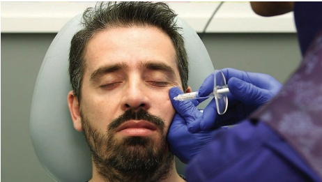
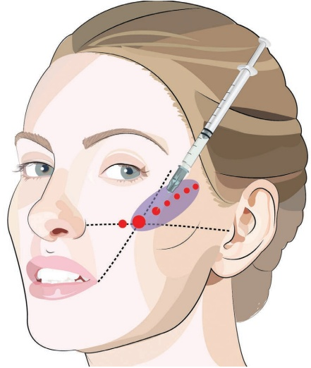
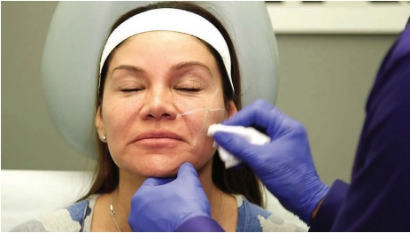
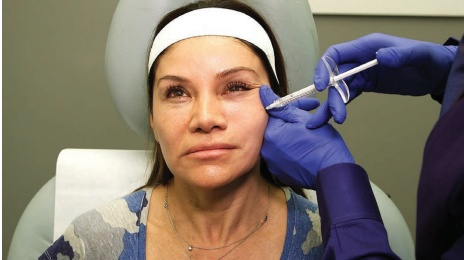
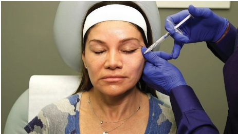
该技术得名于一位同事在作者描述该技术时到参加研讨会时提出的评论：先进行团注（头部），然后是白色产品的反行线性丝（尾部）。
关于注射定位，参见图 12.14。
12.5.1 分步技术
-
对颧弓入口点进行消毒和标记，该点位于法令纹内侧。
-
标记鼻翼-泪沟线、颧弓、眶下缘、颧皮腱的附着点以及矢量线（其解剖学相关位置为面静脉）。
-
在鼻翼-泪沟线上，于颧皮腱附着点的外侧，在矢量线与鼻翼-泪沟线的交叉处标记内侧面颊入口点。
-
标记危险区域：眶下缘（以避免套管针进入眼眶）和眶下孔。
-
使用全粘度（未稀释）的 CaHA 或标准稀释液进行骨膜注射，使用 25G、38 mm 的套管针；或使用高倍稀释（每 1.5 mL 试剂用 1–1.5 mL）的 CaHA 进行真皮下注射，使用 25G、50 mm 的套管针。
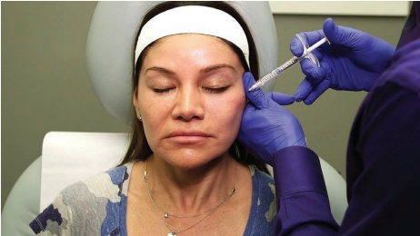
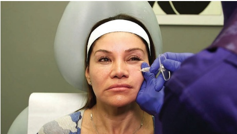
-
用肾上腺素化利多卡因麻醉入口点。
-
使用 23G 针头进行预穿孔。
-
在颧弓入口点，将套管针通过皮肤到达皮下脂肪层。
-
旋转套管针并压过SMAS的阻力至骨膜（图 12.15）。
-
将套管针沿鼻翼-泪沟线平行推进至距眶下缘内侧外侧约 1–2 cm 处。
-
注射 0.1–0.2 mL 高粘度产品团注。然后，从该点向回注射一根反行线性丝，长度约为 0.1–0.2 mL，沿骨膜方向回到入口点（图 12.16）。
-
在入口点重新定向套管针，并重复上述步骤两次，但向下更远。
-
在内侧入口点，将套管针推进至骨膜层，位于眶下缘和眶下孔之间（图 12.17）。
-
注射一小团约 0.05–0.1 mL；然后从该团注向入口点注射额外的反行线性丝 0.1–0.2 mL（图 12.18）。
-
在更靠下的位置重复此步骤，此时套管针位于眶下孔的刚外侧。
-
切换至高倍稀释的羟基磷灰石钙（CaHA）并使用较长的钝性套管针。
-
从外侧入点，沿着真皮-真皮下交界处向量线推进钝性套管针。确保产品不注射到颧部皮肤韧带的切开点颅侧，以避免颧部水肿。
-
注射约 0.05–0.1 mL 的逆行线性丝。
-
以扇形技术重复更下方区域的逆行注射（图 12.19）。
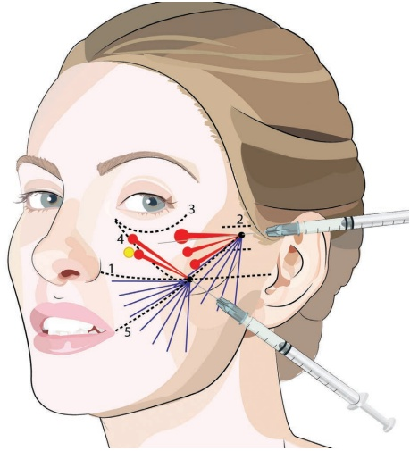
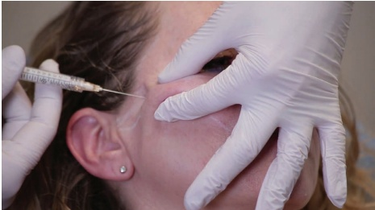
-
从内侧入点，沿着鼻翼-泪沟线推进钝性套管针至鼻翼。
-
注射约 0.05–0.1 mL 的逆行线性丝。
-
以扇形技术重复更下方区域的逆行注射（图 12.20）。避免在下颌缘注射大体积。
-
根据需要进行手动按摩以均匀分布。
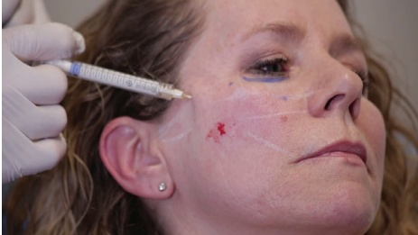
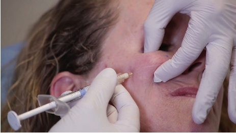
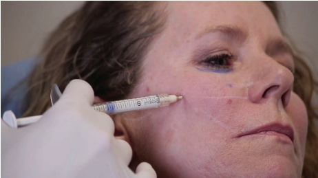
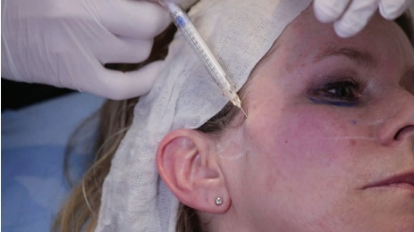
12.6 面颊丰容：锐针技术
有关注射定位，参见图 12.21。
12.6.1 分步技术
-
在图示中标记出线条和危险区域。
-
使用全粘度（未稀释）的 CaHA 或标准稀释液，使用 27G、19 mm 的锐针进行骨膜注射。
-
在推进针的过程中抬起面颊，以重新定位保留韧带（图 12.22）。
-
使用单点皮肤穿刺在骨膜上放置约 3–4 个团注，以最大程度地减轻不适感（图 12.23）。
-
从外侧向内侧操作，每个团注注射约 0.05–0.1 mL。在面颊顶点处可注射更多，但每个团注不得超过 0.1 mL，以预防血管并发症（图 12.24）。
-
在骨膜上注射时抬起颧皮韧带，用团注将其向上推升。使结果均匀（图 12.25）。
-
在内侧面颊处，重新检查眶下孔的位置（图 12.26）。
-
将团注放置在孔的上、外和下方。
-
根据需要进行手动按摩以使其均匀。
12.7 面颊丰容：皮肤质量改善
12.7.1 分步技术
有关注射定位，参见图 12.27。
- 在图示中标记出线条和入点。
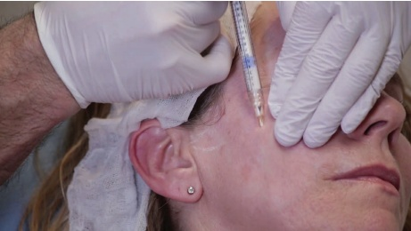
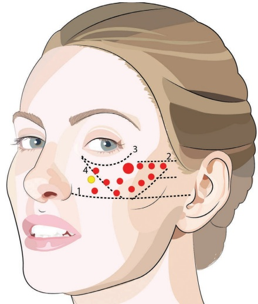
-
对皮肤、耳部和前额毛发进行消毒。在毛发上放置无菌纱布。
-
可考虑在入点使用局部麻醉（利多卡因加肾上腺素用于收缩血管）。
-
使用高倍稀释的 CaHA（每 1.5 mL CaHA 产品稀释 0.5–1.5 mL 利多卡因）和 25G、50 mm 的钝性套管针。
-
为保持浅层，用一根手指在入点前方、一根手指在入点后方沿套管针的长度方向拉伸皮肤（图 12.28）。
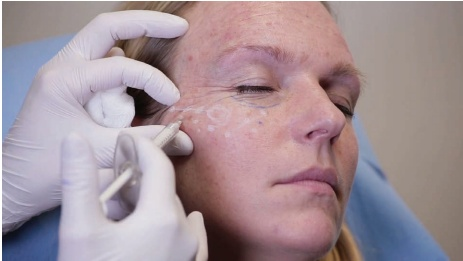
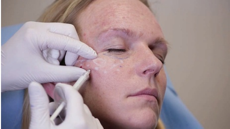
- 根据示意图，采用扇形技术，每条线注射约 0.05–0.1 mL 的向后推注物（retrogrades）。
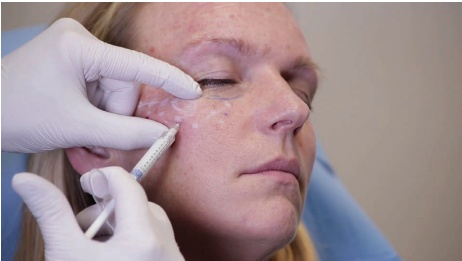
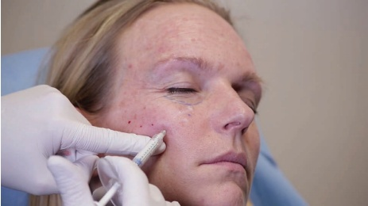
-
从内侧颊部入点，沿鼻翼-口角线向鼻唇沟推进（图 12.29）。由于使用的是稀释的羟基磷灰石钙（CaHA），因此也可以注射到鼻唇沟。注意该区域的面动脉。
-
根据示意图，采用扇形技术，每条线放置多个约 0.05–0.1 mL 的向后推注物。
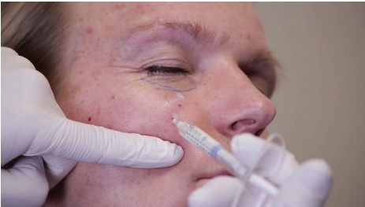
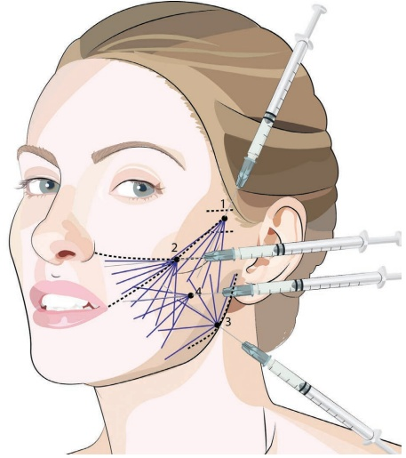
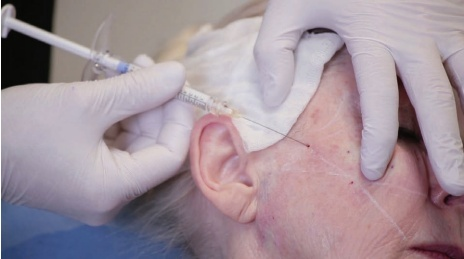
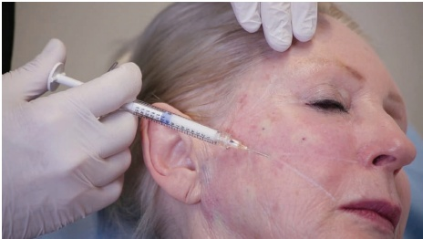
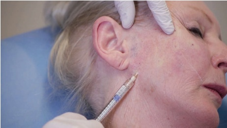
- 从中颊注射点（图 12.31）开始，根据图示采用扇形技术进行多次退行性注射。
-
从下颌角注射点（图 12.30）开始，用非惯用手牵拉面颊，以便进行浅层注射。
-
再做一圈薄的退行性注射扇形。
-
根据需要塑形。
12.8 术后护理
如有必要，可手动按摩该区域以使产品均匀分布。操作时，采用向上塑形技术改善注射产品的形态，并将保留的韧带重新定位至更水平的方向。肿胀可能不均，通常在一两天内会消退。
12.9 实现最佳效果的附加治疗
有时，由于侧面颊部增生，眶上三角区（palpebromalar groove, PMG）会变得更明显。
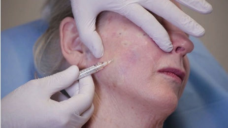
术后必须进行仔细评估，可能需要在 PMG 进行额外的注射（图 12.32）。
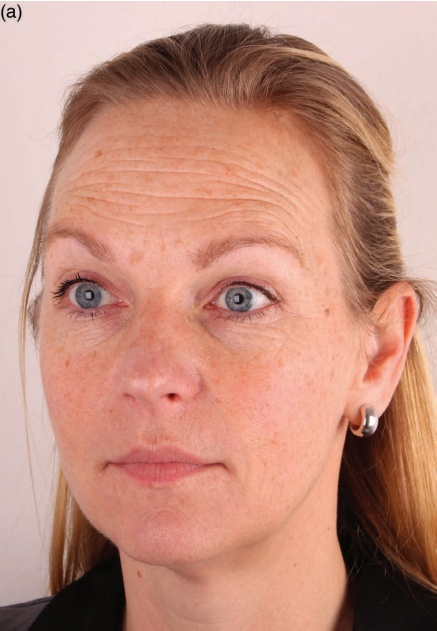
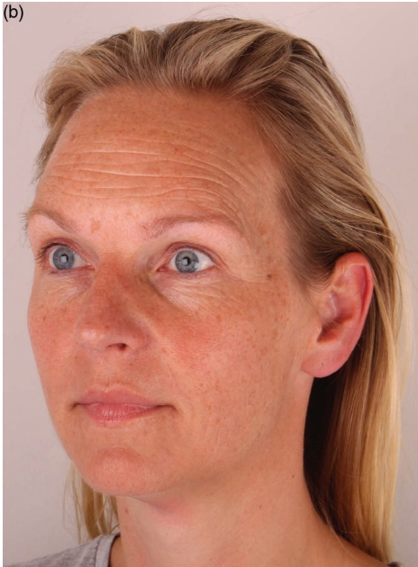
参考文献
[1] D. W. Furnas, “The retaining ligaments of the cheek,” Plast Reconstr Surg, vol. 83, no. 1, pp. 11–16, 1989.
[2] F. E. Barton, “The SMAS and the nasolabial fold,” Plast Reconstr Surg, vol. 89, no. 6, pp. 1054–1057, 1992.
[3] I. Pitanguy et al., “Numerical modeling of facial aging,” Plast Reconstr Surg, vol. 102, no. 1, pp. 200–204, Jul. 1998.
[4] D. W. Furnas, “Festoons, mounds, and bags of the eyelids and cheek,” Clin Plast Surg, vol. 20, no. 2, pp. 367–385, Apr. 1993.
[5] M. Gonzalez-Ulloam, E. S. Flores, “Senility of the face—basic study to understand its causes and effects,” Plast Reconstr Surg, vol. 36, no. 2, pp. 239–246, Aug. 1965.
[6] R. Fitzgerald et al., “Update on facial aging,” Aesthet Surg J, vol. 30, no. Suppl 1, 2010.
[7] K. A. Valentine et al., “Judging a man by the width of his face: The role of facial ratios and dominance in mate choice at speed-dating events,” Psychol Sci, vol. 25, no. 3, pp. 806–811, 2014.
[8] S. Bay Aguilera et al., “How to make calcium hydroxylapatite injections safer,” J Drugs Dermatol, vol. 13, no. 9, p. 1015, 2014.